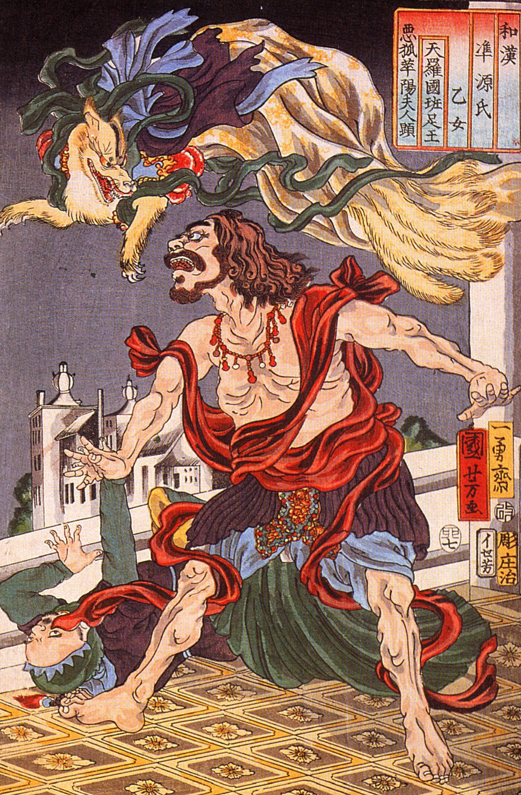
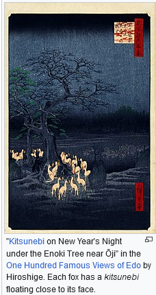
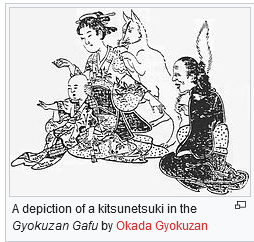
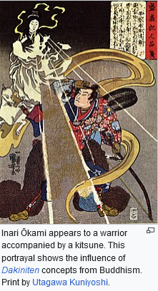
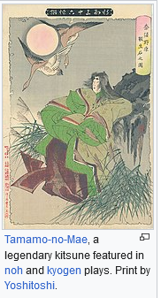
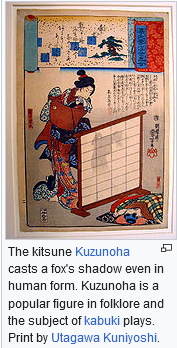

From Wikipedia, the free encyclopedia This article is about the Japanese word for the fox. For other uses, see Kitsune (disambiguation). A nine-tailed fox spirit (kyūbi no kitsune) scaring Prince Hanzoku; print by Utagawa Kuniyoshi, Edo period, 19th century In Japanese folklore, kitsune (狐, きつね, IPA: [kʲi̥t͡sɯne̞] i) are foxes that possess paranormal abilities that increase as they get older and wiser. According to yōkai folklore, all foxes have the ability to shapeshift into human form. While some folktales speak of kitsune employing this ability to trick others—as foxes in folklore often do—other stories portray them as faithful guardians, friends, and lovers.

Kitsune are believed to possess superior intelligence, long life, and magical powers. They are a type of yōkai. The word kitsune is sometimes translated as 'fox spirit', which is actually a broader folkloric category. This does not mean that kitsune are ghosts, nor that they are fundamentally different from regular foxes. Because the word spirit is used to reflect a state of knowledge or enlightenment, all long-lived foxes were believed to gain supernatural abilities. There are two common classifications of kitsune: • The zenko (善狐, lit. 'good foxes') are benevolent, celestial foxes associated with Inari; they are sometimes simply called Inari foxes in English. • On the other hand, the yako (野狐, lit. 'field foxes', also called nogitsune) tend to be mischievous or even malicious. Local traditions add further types. For example, a ninko is an invisible fox spirit that human beings can only perceive when it possesses them.





The oldest relationship between the Japanese people and the fox dates back to the Jomon period necklace made by piercing the canine teeth and jawbone of the fox. In Nihon Shoki, which was compiled in 720 and is one of the oldest history books in Japan, foxes appeared for the first time as supernatural beings that let people know good omens and bad omens. Various legends about foxes with human personalities were first described in Nihon Ryōiki which was compiled around 822. In this story, a man from Mino Province and a kitsune having a female personality get married and have a child, and the kitsune as the wife is described as a person who has a deep resentment against dogs. Also, their descendants are depicted as doing evil things by taking advantage of their power. According to Hiroshi Moriyama, a professor at the Tokyo University of Agriculture, foxes have come to be regarded as sacred by the Japanese because they are the natural enemies of rats that eat up rice or burrow into rice paddies. Because fox urine has a rat-repelling effect, Japanese people placed a stone with fox urine on a hokora of a Shinto shrine set up near a rice field. In this way, it is assumed that people in Japan acquired the culture of respecting kitsune as messengers of Inari Okami. Folktales from China tell of fox spirits called húli jīng (Chinese: 狐狸精) also named as nine tale fox (Chinese: 九尾狐）that may have up to nine tails. These fox spirits were adopted to Japanese culture through merchants as kyūbi no kitsune (九尾の狐, lit. 'nine-tailed fox'). Many of the earliest surviving stories are recorded in the Konjaku Monogatarishū, an 11th-century Japanese collection of Japanese, Chinese, and Indian literary narratives. Despite its fearsome reputation, the Kraken could also bring some benefits for people. Sailors believed that the monster swam accompanied by huge schools of fishes, telling how fishes cascaded down the Kraken’s back when it emerged from the sea (Wallenberg, 1835). Some claimed that fishes ate the monster’s excrement while others said that the Kraken produced some sort of “aroma” to attract its fish prey. Putting their fear aside, some fishermen risked going near the monster in order to secure a more bounteous catch. Embedded in Japanese folklore as they are, kitsune appear in numerous Japanese works. Noh, kyogen, bunraku, and kabuki plays derived from folk tales feature them, as do contemporary works such as native animations, comic books and video games. Japanese metal idol band Babymetal refer to the kitsune myth in their lyrics and include the use of fox masks, hand signs, and animation interludes during live shows. Western authors of fiction have also made use of the kitsune legends although not in extensive detail.